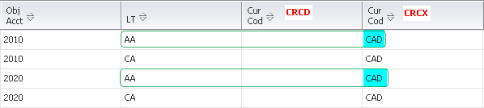
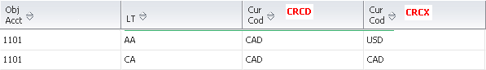
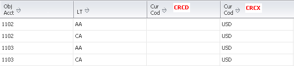
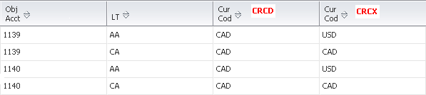
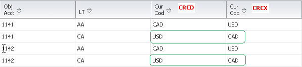

| Purpose |
| Scope |
| Details |
| Overview of Functionality |
| Setup |
| Processing Options |
| Data Selection |
| Reviewing the Report |
| Error Messages |
| Resolving the Integrity |
| Reasons for Integrity |
| Frequently Asked Questions |
| Additional Resources |
This document provides an overview of the Foreign Currency Account Balances Integrity Report (R09707) including the overview, program functionality, setup, information on reviewing and resolving the integrity report, reasons for integrity and frequently asked questions.
This document is intended for Finance Functional users who will be running and troubleshooting the General Accounting Integrity reports.
The Foreign Currency Account Balances Integrity Report (R09707) reports the discrepancies in foreign account balances in the Account Balance (F0902) table. If there are incorrect or duplicate ledger type records, there can be discrepancies in financial reports or integrities. It verifies that each AA and CA ledger transaction in the Account Balances (F0902) table is correct based on the following setups:
The R09707 report can be run in either proof/final mode per processing option setup:
Mode Tab
1. Process
Its always recommended to run R09707 report wide open. For performance reasons, you may consider data selection by Company, Fiscal Year and Object Accounts range.
Non multi-currency environment
It throws following Error Message:
If the Multi-Currency Conversion flag in General Accounting Constants (P0000) is N, the integrity report looks at all records in Account Balance (F0902) for the currency related fields - CRCD & CRCX. If any of these fields contains any value other than blank, it displays this error.
Multi-currency environment

The R09707 Integrity report prints following Error Messages:
Since PBC flag for Company 00150 is off and F0902 CRCD is Blank, the F0902 CRCX should be same as the currency of the company (i.e. USD) for the CA ledger, which is not in this case, hence this error is thrown.

The F0902 AA ledger type record should have value of F0902 CRCX equal to the company's currency (USD), which is not in this case.

This error could be thrown because of following scenarios:
a) Object Account 1050 is a CAD monetary account for Company 91009 (USD) but the F0902 CRCD field is blank which is incorrect.

b) Object Account 1101 is a CAD monetary account for Company 91009 (USD). Both F0902 CRCX and CRCD are not same as F0901 Currency Code (i.e. CAD).

This scenario may happen if an account is changed from non-monetary to monetary, after you post a foreign transaction. For example, a transaction is created and posted in CAD for a non-monetary account in a USD company. When the transaction is posted, two records are created in the Account Balances (F0902) table as follows:

Later, the non-monetary account is changed to a CAD monetary account and a new transaction is made to the account. The posted records appear as:

Since the account previously had entries in it, the F0902 now has duplicate AA and CA records - there are four records (two for the AA ledger and two for the CA ledger) for the same account causing the discrepancy. Only one AA ledger record and one CA ledger record should appear in the F0902.
This error could be thrown because of following scenarios
a) If F0902 CRCD is blank for a non-monetary account and the PBC flag for company is off, the account is part of the PBCxx AAI's, it will throw this error.


b) This may happen if either the PBC flag for company is enabled or a range of accounts is added to AAI item PBCxx after you post a foreign transaction. For example, a transaction is created and posted in CAD for a non-monetary account in a USD company (not using Post Balances by Currency). When the transaction is posted, two records are created in the Account Balances (F0902) table as follows:

Later, either the PBC flag for company is activated or account is added in PBCxx AAI's and transactions are further posted to the same account. The F0902 records appear as:

Since the account previously had entries in it, the F0902 now has duplicate AA and CA records - there are four records (two for the AA ledger and two for the CA ledger) for the same account causing the discrepancy. Only one AA ledger record and one CA ledger record should appear in the F0902.

If F0902 CRCD is not blank for a non-monetary account, and the account does not fall under PBCxx AAI's range, it throws this error. It may occur, if you change an account from a monetary account to a non-monetary account or if you remove a range of accounts from AAI item PBC xx, after you post a foreign transaction.


If PBC flag is on for company, an account of that company falls under PBCxx AAI range and F0902 CRCD is not blank, it compares F0902 CRCX with F0902 CRCD. If F0902 CRCX is not equal to F0902 CRCD, it throws this error.

This error would be thrown if no matching AA ledger record exists for a corresponding CA record.

In this example, for both object accounts 1143 and 1144 only CA ledger records exist and corresponding AA ledger type records do not exist.
If the user has set the processing option to erase erroneous records and either of the above error has been found, then system would delete the record in question.
If delete of the CA record in question is unsuccessfull , it would print this message.
To correct these issues:
Primarily these integrity issues happen because of:
Answer 1: The discrepancies showing on both integrity reports could possibly be related, if F0902 table has duplicate records for each fiscal year and ledger type as shown in Error Messages above. As explained previously, these scenarios may happen either an account is changed from non-monetary to monetary or the PBC flag for company is toggled, after you post foreign transactions to the accounts for that company. Please follow the steps mentioned under Resolving the Integrity section to resolve the discrepancies listed in both integrities.